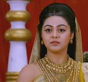
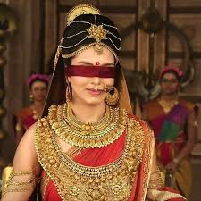
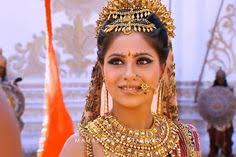

Home
Pandavas
Kauravas
Supporting_roles
Female leading roles
Riya Deepsi
Kunti(253 episodes,2013-2014)

Kunti (Sanskrit: कुन्ती, IAST: Kuntī), born Pritha (Sanskrit: पृथा,
IAST: Pṛthā), was the queen of Kuru in the Hindu epic Mahabharata. Kunti
was married to Pandu and is the mother of Karna, Yudhishthira, Bhima,
and Arjuna. She is depicted to possess beauty, intelligence and
shrewdness. Originally born to the Yadava chief Shurasena, Pritha was
adopted by her childless uncle, Kuntibhoja, and subsequently bestowed
with the name Kunti. During her adolescence, she garnered the favour of
the sage Durvasa, receiving a divine mantra. Intrigued, she employed
this mantra to invoke the sun god Surya, resulting in the birth of her
son, Karna. Faced with the societal stigma associated with bearing a
child out of wedlock, Kunti found herself compelled to relinquish her
son to safeguard her honour. Upon attaining marriageable age, Kunti
chose Pandu, the king of Kuru, as her husband. However, her marital
harmony was disrupted by the inclusion of Madri, the princess of Madra,
as Pandu's second wife. Pandu, cursed to perish instantly upon
attempting intimacy with his wives, retired to the forest with Kunti and
Madri. Responding to her husband's entreaty, Kunti employed her mantra,
resulting in the birth of Yudhishthira, Bhima, and Arjuna. Later, she
shared this mantra with Madri, who bore Nakula and Sahadeva. Following
Pandu's demise and Madri's self-immolation, Kunti assumed responsibility
for her
Pooja Sharma
Draupadi(267 episodes,2013-2014)

Draupadi (Sanskrit: द्रौपदी, romanized: draupadī, lit. 'Daughter of
Drupada'), also referred to as Krishnā, Panchali, and Yajnaseni, is the
main female protagonist of the ancient Indian epic Mahabharata, and the
wife of the five Pandava brothers—Yudhishthira, Bhima, Arjuna, Nakula,
and Sahadeva.[1] She is noted for her beauty, courage, and polyandrous
marriage.[2] In the Mahabharata, Draupadi and her twin brother,
Dhrishtadyumna, were born from a yajna (fire sacrifice) organized by
King Drupada of Panchala. Arjuna won her hand in marriage, but she had
to marry the five brothers because of her mother-in-law's
misunderstanding. Later, she became the empress of Indraprastha after
Yudhishthira performed the Rajasuya ritual and achieved the status of
the emperor. She had five sons, one from each Pandava, who were
collectively addressed as the Upapandavas.[3] The most notable incident
in Draupadi's life is the game of dice at Hastinapura where Yudhishthira
lost all his possessions, and she was humiliated by the Kaurava brothers
and Karna. An attempt was made by Dushasana to disrobe her, but she was
saved by the divine intervention of Krishna. Following the subsequent
episodes, Draupadi and the Pandavas were exiled for thirteen years, with
the last year being a period of hiding when she assumed the identity of
the maid Sairandhri. The exile was followed by the Kurukshetra War,
where Draupadi lost her father, brothers, and her five children. After
the war, she resumed her role as the empress for thirty six years, after
which she retired to the Himalayas along with her husbands.[4]
Aparna Dixit
AMBALIKA Ambalika(120 episodes,2013-2014)

Along with her sisters, Amba and Ambika, Ambalika was taken by force by
Bhishma during their svayamvara, the latter having challenged and
defeated the assembled royalty. He presented them to Satyavati for
marriage to Vichitravirya.[3] Ambalika and her sister spent seven years
in their husband's company. Vichitravirya was afflicted with
tuberculosis, and died from the disease.[4][5] After Vichitravirya's
death, since he left no heirs, his mother Satyavati sent for her first
born, the sage Vyasa. She asked him to father children with the widowed
queens of Vichitravirya, according to the prevalent custom of niyoga.
Vyasa had come from years of intense meditation and as a result, he
looked tremendously unkempt. When he approached Ambika, she closed her
eyes in fear. As a result, the blind Dhritrashtra was born. When he
approached Ambalika, she turned pale in fear. Her son Pandu, as the
result of the niyoga, was born with a pale appearance.[6][7] Her son
Pandu was married to Kunti and Madri. She is the grandmother of Pandavas
– Yudhishtira, Bhima, Arjuna, Nakula and Sahadeva, who were the central
characters of the epic.[8][9] After the death of Pandu, Ambalika
accompanied her mother-in-law Satyavati, and sister Ambika, to the
forest, and spent the rest of her days in spiritual retreat.[10]
Riya Deepsi
Gandhari(267 episodes,2013-2014)

Gandhari was born to Subala and Sudharmaa of Gandhara. Gandhari is
regarded as an incarnation of the goddess Mati.[2] She was the sister of
Shakuni.[citation needed] As a maiden, she is said to have impressed
Shiva through penance and received a boon to bear a hundred children.
However, the reason for her penance and her receiving such boon is
unknown. In alternate versions, she is said to have impressed Veda Vyasa
with her gracious and generous nature. One of the main reasons of
Bhishma choosing Gandhari to be the elder daughter-in-law of the Kuru
Kingdom is said to be this boon, which would put an end to his worry of
the throne remaining vacant.[citation needed] Gandhari's marriage was
arranged with Dhritarashtra, the eldest prince of the Kuru kingdom. The
Mahabharata depicted her as a devout woman, beautiful and virtuous.
Their marriage was arranged by Bhishma. When she found out that her
would-be husband was born blind, she decided to blindfold herself in
order to emulate her husband's experiences. It is stated that the act of
blindfolding herself was a sign of dedication and love. The Mahabharata
depicts her marriage as a major reason for the story's central conflict,
since her brother Shakuni was furious to learn that her husband was
blind. However in Vyasa's Mahabharata, there is no mention of Shakuni
objecting to Gandhari's marriage with Dhritarashtra. As per the Adi
Parva of the Mahabharata, Shakuni brought Gandhari to Hastinapura for
marriage. Gandhari was welcomed by the Kuru elders and Shakuni gave many
gifts to Hastinapura and returned to his kingdom
Veebha Anand
Subhadra(187 episodes,2013-2014)

Subhadra (Sanskrit: सुभद्रा, IAST: Subhadrā) is a princess of Dvārakā
mentioned in the Hindu epic Mahabharata. She is the sister of deities
Krishna and Balarama in Hindu scriptures. Subhadra married Arjuna, one
of the Pandava brothers and had a son named Abhimanyu. Subhadra is part
of the triad of deities worshipped at the Jagannath Temple at Puri,
along with Krishna (as Jagannatha) and Balarama (or Balabhadra). One of
the chariots in the annual Ratha Yatra is dedicated to her.
Richa Mukherjee
Uttara

Subhadra (Sanskrit: सुभद्रा, IAST: Subhadrā) is a princess of Dvārakā
mentioned in the Hindu epic Mahabharata. She is the sister of deities
Krishna and Balarama in Hindu scriptures. Subhadra married Arjuna, one
of the Pandava brothers and had a son named Abhimanyu. Subhadra is part
of the triad of deities worshipped at the Jagannath Temple at Puri,
along with Krishna (as Jagannatha) and Balarama (or Balabhadra). One of
the chariots in the annual Ratha Yatra is dedicated to her.